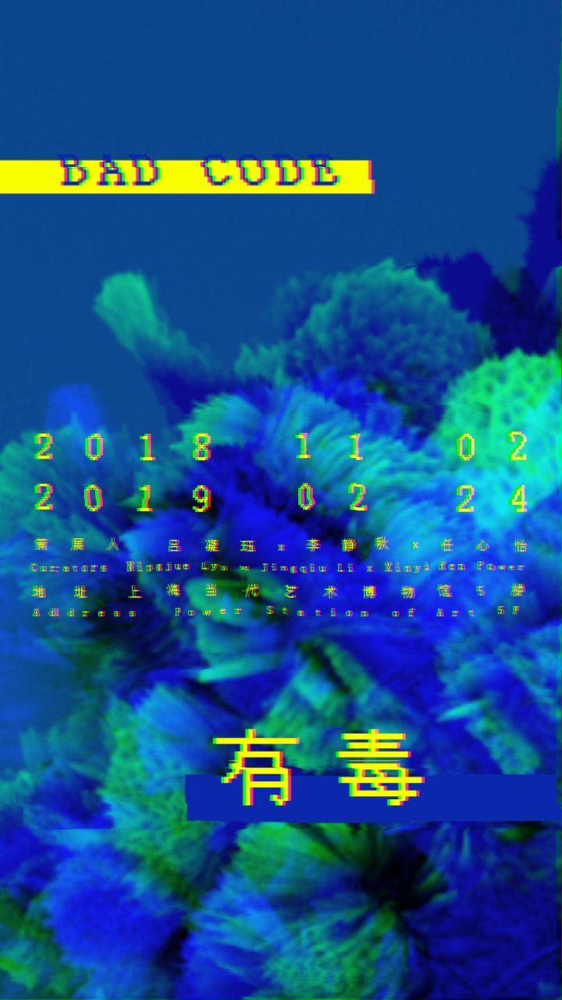
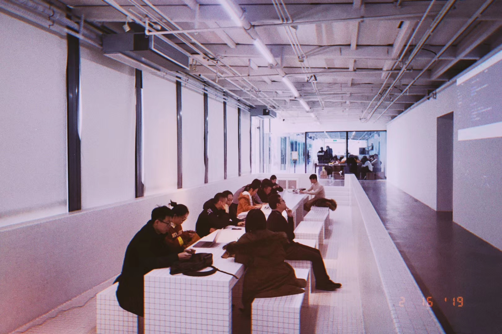
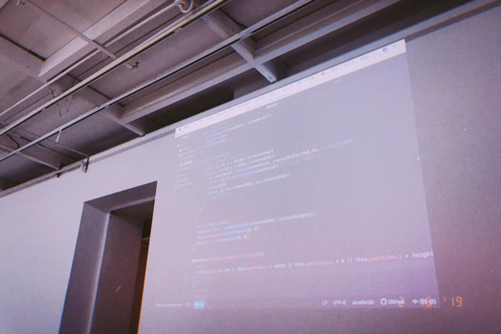
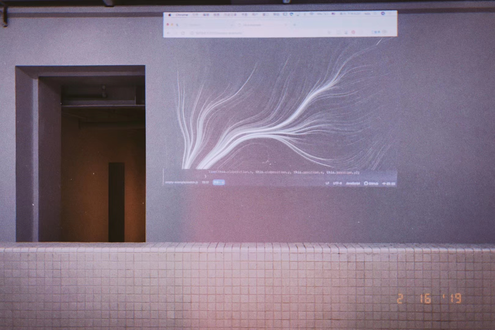
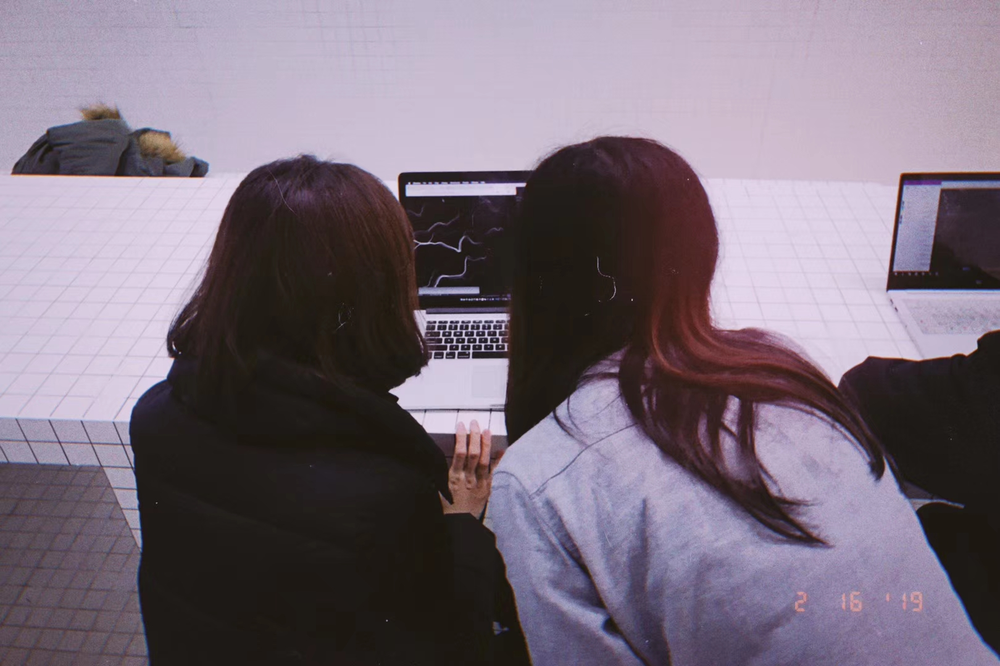
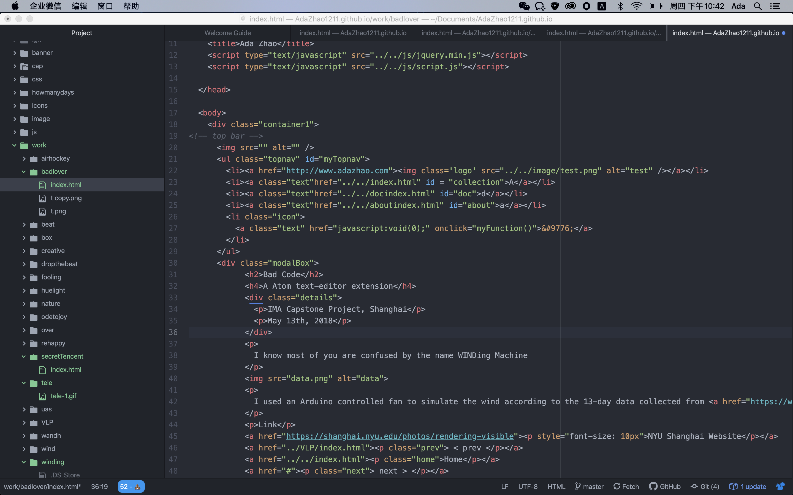

PSA Workshop, Shanghai
Feb 16th, 2019
In 2019, I was asked to give a workshop to reveal and define Bad Code.
Bad Code was one of the two projects selected by Emerging Curators Project in Power Station of Art, Shanghai. It is a new media art exhibition that examines the cohabitation of human and machine in a post-internet age. The exhibition takes the concept of "bad code" as its starting point to discuss the various possibilities posed by this idea that strides between practical tool and mutating virus.

Text editor is the basic tool for creative technologists and new media artists to express their ideas. It is a way to create bad code art pieces while generating bad code itself. That's why I came up with the idea of a Atom extension that counts how many backspace keys you press while coding.
A snippet of the workshop. (Yes, I fell in love with film cameras at that moment)




Up to now, I still have the Bad Code counter living in my Atom, counting how many backspace keys I have been pressing, while updating this portfolio :)

< prev
Home
next >